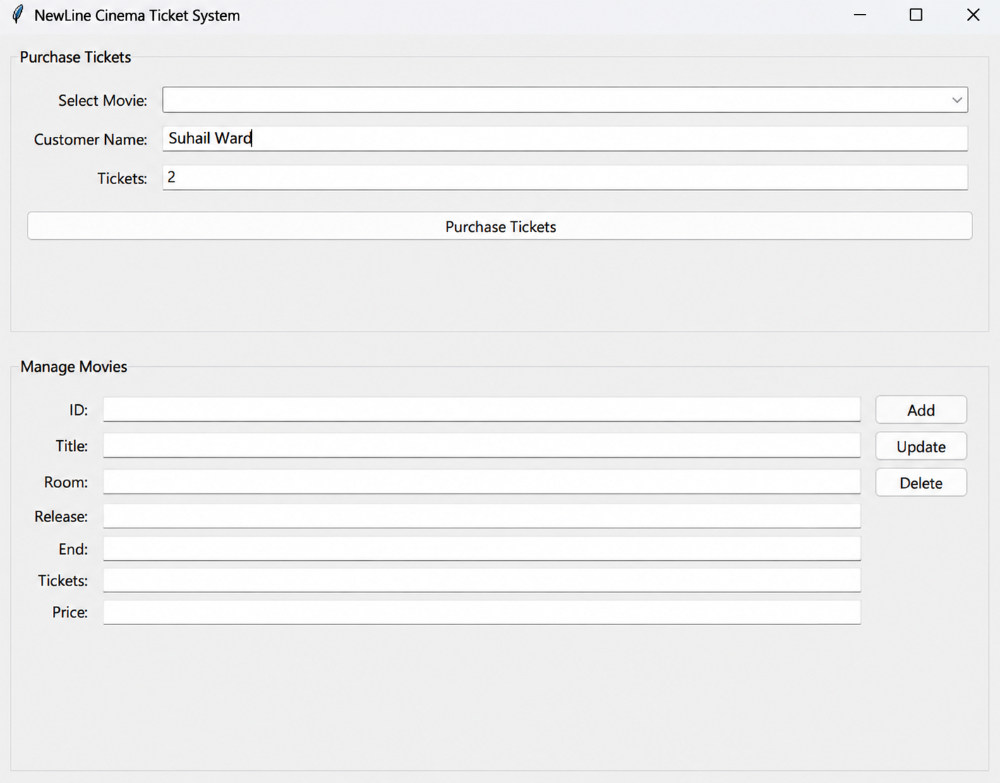

PYTHON APPLICATION
Movie Ticket Booking System
A Python-based movie ticket booking application using a client-server architecture to manage movie information, ticket bookings and customer connections.
Project Overview
The Movie Ticket Booking System is a Python-based application designed to manage movie information and ticket bookings through a client-server architecture.
Users interact with the system through a graphical interface, while the server manages client connections and database operations relating to movie information and ticket sales. The system also includes an administrative interface for managing movie details.
The project demonstrates the use of socket programming, multi-threading, graphical user interfaces and database management to create a functional distributed application.
Key Features
Technologies Used
Application Screenshots
Client Interface

Ticket Receipt